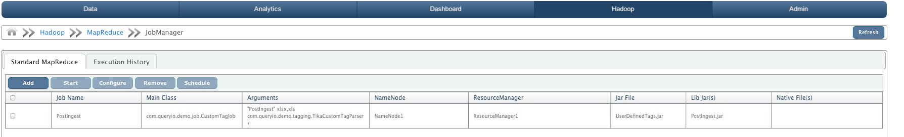
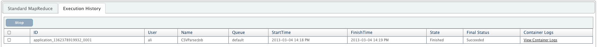
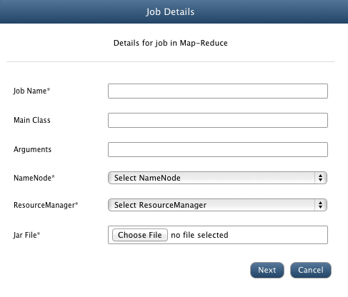
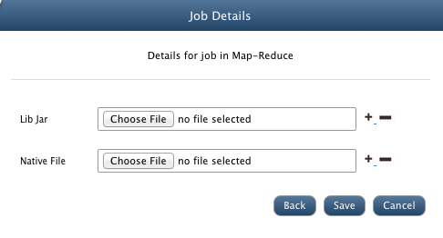
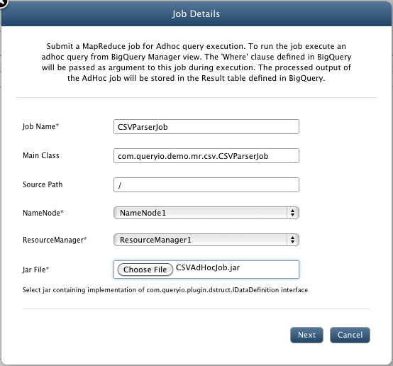
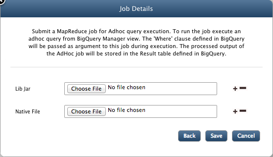

YARN Job Manager
In this chapter
Using QueryIO, you can easily submit your MapReduce jobs for execution.
In the status view, you can also track the status of the applications that you have submitted for execution.
MapReduce Job
QueryIO provides facility to execute MapReduce application in form of a JAR file. QueryIO supports single JAR file for a job.
Use following guidelines to create a MapReduce application
- There must be at least three classes in your job:
- Job execution class(Main class)
- Mapper Class
- Reducer Class
- If there are any dependent JAR files which are required for job execution, then dependent classes must be added to Application JAR.
- Since only one JAR is supported, all classes should be combined in a single JAR file.
Job Manager Details
Following details are displayed:
- Jobs: Details of jobs submitted by user.

- Jobs Execution History: Detailed history of jobs executed.

Jobs
Following details about jobs are displayed:
- Job Name: Unique name of the job.
- Main Class: Main class name.
- Arguments: Arguments provided at time of adding new job.
- Jar File: Name of the Jar file.
- NameNode: NameNode associated with the job.
- ResourceManager: ResourceManager associated with the job.
- Lib Jar(s): Depenedent library jar files required by job.
- Native File(s): Native files added along with job.
Execution History
Detailed history of all the jobs are displayed here.
- ID: Unique ID of the job.
- User: Name of the user who created job.
- Name: Name of the job.
- Queue: Queue in which application was submitted to execute.
- StartTime: Starting time of the job.
- FinishTime: Finishing time of the job.
- State: Current state of the job.
- Final Status: Final status of the job as Successful or Failed.
- Container Logs: Click here to view logs of all containers for debugging.
NOTE: Restarting ResourceManager or QueryIO server will reset "Job execution History".
Add MapReduce Job
- Click on Add button to add new job.
- Job Name: Enter a job name.
- Main Class: Provide main class for the job to execute.
- Arguments: Provide arguments required by main class of job.
- NameNode: Select NameNode on which job will be executed.
- ResourceManager: Select ResourceManager for the job.
- Jar File: Click on Choose File to browse and select the MapReduce Application JAR file.

- Lib Jar:Any dependent library jar files required by the job can be added here.
- Native File: Any related native files can be added for the job.

- Click on Save to add new job.
Configure MapReduce Job
To configure a Job, select the checkbox against target job and click Configure. All configurable properties of Job will be displayed. You can change the JAR file for the job.
Update the properties and click on Save for changes to take affect.
Start/Remove/Stop MapReduce Job
Select the Job and click on Start or Remove to perform respective function.
Select the job from the "Jobs Execution History" table and click Stop to stop the job.
Schedule MapReduce Job
Select the Job and click on Schedule to set the frequency of job execution. Select the time interval after which job execution must be repeated and starting time for the job.
Add Job for Ad-Hoc query
- Click on Add button to add new job.
- Job Name: Enter a job name.
- Source Path: Provide source for the job to execute.
- NameNode: Select NameNode on which job will be executed.
- ResourceManager: Select ResourceManager for the job.
- Jar File: Click on Choose File to browse and select the MapReduce Application JAR file.

- Lib Jar:Any dependent library jar files required by the job can be added here.
- Native File: Any related native files can be added for the job.

- Click on Save to add new job.
Configure Ad-Hoc Job
To configure a Job, select the checkbox against target job and click Configure. All configurable properties of Job will be displayed. You can change the JAR file for the job.
Update the properties and click on Save for changes to take affect.
Start/Remove/Stop Ad-Hoc Job
Select the Job and click on Start or Remove to perform respective function.
Select the job from the "Jobs Execution History" table and click Stop to stop the job.
Schedule Ad-Hoc Job
Select the Job and click on Schedule to set the frequency of job execution. Select the time interval after which job execution must be repeated and starting time for the job.
Copyright © 2017 QueryIO Corporation. All Rights Reserved.
QueryIO, "Big Data Intelligence" and the QueryIO Logo are trademarks
of QueryIO Corporation. Apache, Hadoop and HDFS are trademarks of The Apache Software Foundation.